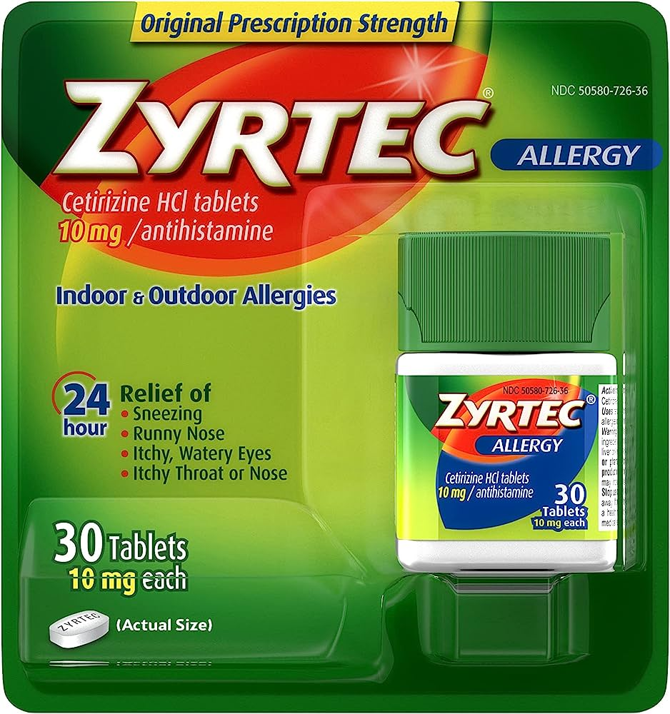
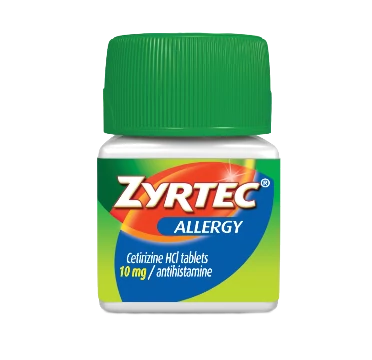

Basic Medications and their Usage
Zyrtec
*** The following text is from the article "Zyrtec Uses, Dosage & Side Effects" or can be found on Drugs.com ***
What is Zyrtec?
Zyrtec is used in adults and children to treat cold or allergy symptoms such as sneezing, itching, watery eyes, or runny nose. Zyrtec is also used to treat itching and swelling caused by chronic urticaria (hives). Zyrtec is an antihistamine that reduces the effects of natural chemical histamine in the body. Histamine can produce symptoms of sneezing, itching, watery eyes, and runny nose.
Warnings
Zyrtec may impair your thinking or reactions. Be careful if you drive or do anything that requires you to be alert. Drinking alcohol can increase certain side effects of cetirizine. Tell your doctor if you regularly use other medicines that make you sleepy (such as other cold or allergy medicine, narcotic pain medicine, sleeping pills, muscle relaxers, and medicine for seizures, depression, or anxiety). They can add to sleepiness caused by Zyrtec. Call your doctor if your symptoms do not improve, if they get worse, or if you also have a fever.
Before taking this medicine
You should not use Zyrtec if you are allergic to cetirizine or similar medicines such as: levocetirizine or hydroxyzine. Ask a doctor or pharmacist before using Zyrtec if you have any health problems. To make sure Zyrtec is safe for you, tell your doctor if you have ever had: recently used alcohol, sedatives, or tranquilizers; or liver or kidney disease.

Zyrtec Indoor + Outdoor Allergies (Tablets)

Zyrtec Indoor + Outdoor Allergies (Tablets)